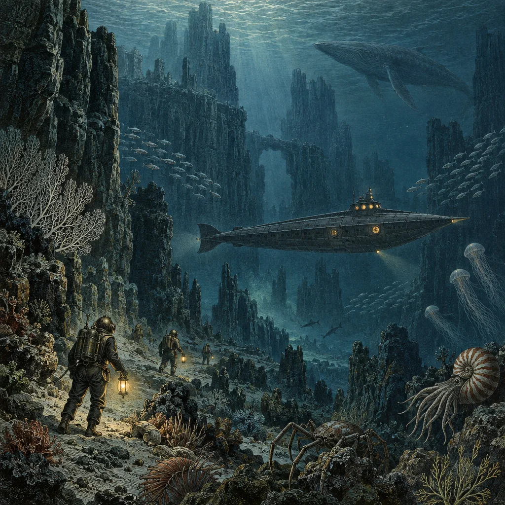

G-01In development

Narrative roleplaying
Seekers of the Deep
A story can begin in a book. Where it goes next is up to you.
Tabletop roleplaying on your screen, with an AI game master, companions with their own voices, and dice that settle the uncertain moments.
Play worlds adapted from books, or adventures made for play. Established rules give each decision weight, and your choices take the story somewhere new.
Public release details to come.